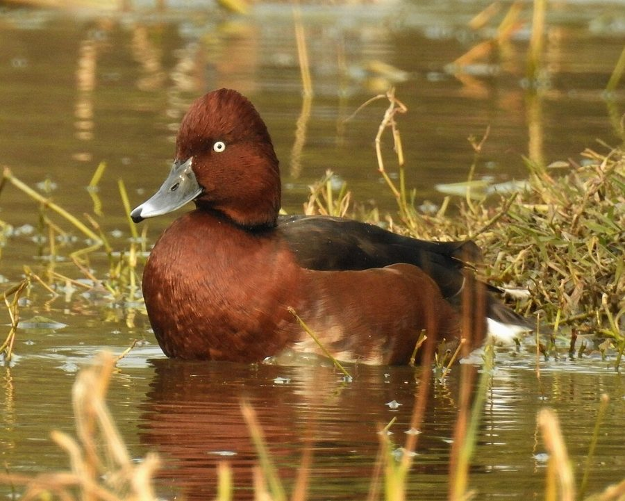

कुर्चियाFerruginous Duck
Aythya nyroca · Anatidae · BRD-0203

- Scientific name वैज्ञानिक नाम
- Aythya nyroca (Güldenstädt, 1770)
- Family कुल
- Anatidae
- Hindi हिंदी
- कुर्चिया
- Local names स्थानीय नाम
- kurchiya, kurchia, ferruginous duck, white eyed pochard
- Status here यहाँ की स्थिति
- native
- Movement आवागमन
- Winter visitor
- Known from कहाँ दर्ज
- Others have published records from the Basti–Ayodhya districts बस्ती–अयोध्या के ज़िलों से दूसरों के प्रकाशित अभिलेख
- IUCN IUCN
- NT
- Review समीक्षा
- audited and independently read
When to look कब देखें
Winter visitor शीतकालीन प्रवासी. Expected mainly in October, November, December, January, February, March, April. मुख्यतः अक्टूबर, नवंबर, दिसंबर, जनवरी, फ़रवरी, मार्च, अप्रैल में अपेक्षित।
Arrives October–November from Central Asian breeding grounds; departs March–April. Ali & Ripley (1968); Grimmett et al. (2011). All migrants and visitors →
Tell it apart from इनसे अलग पहचानें
कुर्चिया / Ferruginous Duck
Aythya nyroca (Güldenstädt, 1770) — Anatidae
कुर्चिया — यह छोटी, भूरी हंस अक्टूबर से अप्रैल तक सर्दियों में पूर्वी उत्तर प्रदेश की नदियों और तालाबों में आती है। नर का गहरा भूरा रंग और सफेद आँखें इसे पहचानने में आसान बनाती हैं। ये पानी की ऊपरी सतह के पास तैरती हैं और पानी की घास खाती हैं।
Quick Identification त्वरित पहचान
| Feature | Description |
|---|---|
| Size | Small diving duck; 35–42 cm long |
| Male plumage | Deep chestnut-brown overall; white eye-ring and iris; white undertail |
| Female plumage | Duller brown; white eye-ring still visible |
| Bill | Small, grey; pale nail at tip |
| Behaviour | Dives for food; gregarious; dabbles at surface |
| Water behavior | Rides high on water; dips rather than upends |
Field tip: A small, dark brown diving duck. Males are distinctly dark chestnut with prominent white eye-ring. Females duller but also showing eye-ring. Occurs in flocks on lakes and tanks. Dives less frequently than typical diving ducks; often dips at surface.
हिंदी — कैसे पहचानें:
छोटी, भूरी हंस।
सफेद आँखें सबसे अच्छी पहचान।
झुंड में रहती है।
पानी पर बैठकर घास खाती है।
Morphology आकारिकी
Biometrics:
| Measurement | Range |
|---|---|
| Total length | 350–420 mm |
| Wing (flattened chord) | 175–195 mm |
| Tail | 75–90 mm |
| Bill | 38–45 mm |
| Tarsus | 32–38 mm |
Size: 35–42 cm long; wingspan 55–65 cm; weighs 350–500 g. A small diving duck.
Plumage (male): Deep chestnut-brown overall, most saturated on head, neck and upper back. Underparts slightly paler. Undertail coverts white (conspicuous). Wing coverts brown.
Plumage (female): Duller brown; head darker than body. Undertail still shows white.
Eyes: White or pale yellow; with white orbital ring (very distinctive feature).
Bill: Small, grey with pale nail; more delicate than typical diving ducks.
Legs and feet: Grey-brown; placed far back for diving.
Sexes: Males distinctly darker with more prominent white eye-ring; females duller.
Juveniles: Resemble females but duller.
Vocalisations. Largely silent; occasional soft calls.
हिंदी: ज़्यादातर चुप रहता है। कभी नरम आवाज़ें करता है।
Behaviour & Ecology व्यवहार और पारिस्थितिकية
Feeding: Both dives and dabbles. Feeds on:
- Aquatic plant seeds and shoots
- Tubers of water plants
- Aquatic insects
- Small fish and invertebrates
- Occasionally grain from stubble
Diving: Dives less than typical Aythya species; often dips at surface with head submerged.
Social behaviour: Gregarious; roosts communally. May form flocks on suitable water bodies.
Swimming: Rides buoyantly on water; swims well.
Flight: Swift, powerful flier; flies with rapid wing beats. Often seen in small flocks flying between water bodies.
हिंदी: झुंड में रहता है। पानी में गोता लगाता है। तालाबों के बीच उड़ता है।
Life Cycle / Phenology जीवन चक्र
Winter visitor: Absent during breeding season; returns to eastern UP October–November.
Arrival and departure: First arrivals mid-October; numbers peak January–February; departure March–April.
Breeding grounds: Central Asia, eastern Europe, Russia; not breeding in UP.
No breeding in region: Purely a winter visitor; all breeding outside UP.
Courtship and pair formation: Occurs on wintering grounds prior to spring departure.
Moult: Complete moult before arrival; eclipse plumage acquired and replaced during winter.
हिंदी: अक्टूबर में आता है, अप्रैल तक रहता है।
Host Plants or Prey आहार
| Food Type | Examples | Feeding Behaviour |
|---|---|---|
| Aquatic plant seeds | Sedges, pondweed seeds | Dive and dabble at surface |
| Plant tubers and shoots | Water lily tubers, submerged vegetation | Dive and pull |
| Aquatic insects | Chironomid larvae, water beetles | Dive or dabble |
| Small fish | Fry, small fish | Occasional diving |
हिंदी: पानी की घास और पौधे खाता है। कीड़े भी खाता है।
Predators / Natural Enemies शत्रु
- Avian predators: Large eagles, harriers, peregrine falcon
- Mammalian predators: Rarely; too small for larger predators to pursue
- Parasites: Waterfowl parasites, helminths
हिंदी: बड़े शिकारी चिड़ियाँ इसका शिकार कर सकती हैं।
Agricultural / Human Relevance कृषि प्रासंगिकता
Protected status: Wildlife Protection Act 1972, Schedule IV (as member of Anatidae).
Conservation status: Listed as Near Threatened (NT) globally due to habitat loss and declining populations in some regions.
Agricultural interactions: Minor; feeds on some cultivated plants but damage negligible.
Cultural relevance: Winter visitor; associated with cooler months; traditionally hunted but now protected.
Ecological value: Seed dispersal; food for raptors; indicator of healthy wetlands.
हिंदी: विधि अधिनियम 1972 के अंतर्गत संरक्षित है। संरक्षण की आवश्यकता है।
Expected Locally स्थानीय रूप से अपेक्षित
Not a field record. Written from published accounts for eastern Uttar Pradesh. No confirmed local sighting yet — if you have seen it, that is what the atlas needs.
अभी तक स्थानीय पुष्टि नहीं। यह विवरण प्रकाशित स्रोतों से है, किसी अवलोकन से नहीं।
This species is NOT a field record. The distribution below is based on published sources describing where Ferruginous Duck should be looked for in the Basti–Ayodhya region.
Winter visitor: GBIF holds published records from the wider Awadh–Purvanchal plain. Expected as a winter visitor (October–April) in eastern UP in lakes, tanks, ponds and river margins. Generally uncommon but regular in suitable habitats. Numbers variable year to year.
Where to look: Large, shallow water bodies with vegetation; lakes and tanks along the Ghaghra and Rapti river systems. Look for small duck flocks on open water.
Peak season: January–February, when Central Asian populations have moved to southern wintering grounds.
Detection: Often in small flocks; distinctive white eye-ring visible even at distance. Early morning and late afternoon visits best.
What a first record would be: A dated photograph showing the distinctive white eye-ring (especially in male), with location GPS coordinates and date, submitted through the About page of this atlas.
हिंदी: सर्दी में तालाबों में आता है। झुंड में देखा जाता है।
Distribution वितरण
Global range: Breeds in Central Asia and eastern Europe; winters in the Mediterranean region, Middle East, and Indian subcontinent.
In India: Winter visitor, distributed across the Indian plains from north to south.
In Uttar Pradesh: Uncommon but regular winter visitor, particularly in northern and eastern regions.
In Basti district / eastern UP: Expected in suitable wetlands; population size needs assessment through field surveys.
Research Questions शोध प्रश्न
- What is the precise population size and distribution of Ferruginous Duck in eastern UP winters?
- How do habitat characteristics (water body size, vegetation, depth) affect presence and abundance?
- What is the diet composition in eastern UP and how does it vary with water body characteristics?
- पूर्वी उत्तर प्रदेश में इस हंस की संख्या साल-दर-साल कितनी बदलती है?
- Do individual birds show site fidelity across winters, or do they move between wetlands? (Equipment-free: mark sightings at water bodies over the season.)
- क्या कृषि पद्धतियों और जल प्रबंधन में बदलाव इसके आने-जाने को प्रभावित करते हैं?
Similar Species मिलती-जुलती प्रजातियाँ
| Species | Key Difference | Hindi | Field Rule | |
|---|---|---|---|---|
| [[tufted_duck\ | Tufted Duck]] (Aythya fuligula) | Larger; males have crest; different head shape | तुंडित हंस | Tufted is larger with males showing obvious crest. Ferruginous lacks crest; has white eye-ring. |
| [[common_pochard\ | Common Pochard]] (Aythya ferina) | Males have red head and black breast; different head shape | लाल हंस | Pochard male is red-headed with black breast. Ferruginous is uniformly brown. |
| [[northern_shoveler\ | Northern Shoveler]] (Spatula clypeata) | Larger; enormous spatulate bill; different size and shape | तिदारी | Shoveler is larger with distinctive spoon-like bill. Ferruginous is small with normal bill. |
Field rule: A small, uniformly dark brown duck with distinctive white eye-ring (both sexes). Small bill and dainty appearance. Dives and dabbles; occurs in flocks on lakes and tanks.
Taxonomy & Classification वर्गीकरण
Original description. Described by Güldenstädt in 1770. Anas nyroca Güldenstädt, 1770. Type locality: Near Caspian Sea.
Subspecies. Monotypic: A. nyroca (Güldenstädt, 1770).
Family and order placement. Order Anseriformes; family Anatidae (ducks, geese, swans). Genus Aythya comprises diving ducks of temperate and subtropical regions.
Phylogenetic notes. Aythya nyroca is one of the smaller Aythya species; closely related to other small diving ducks of the genus.
IUCN status rationale. Assessed as Near Threatened (NT) globally. Breeding habitats in Central Asia are declining due to wetland loss. Wintering habitats also threatened by wetland drainage. Protected under Wildlife Protection Act 1972 in India. Regional populations need monitoring.
हिंदी: संरक्षण की ज़रूरत है। कानून से सुरक्षित है।
Photo Gallery फोटो गैलरी
No photos yet — add field photos to media/species/ferruginous_duck/ and run node scripts/sync_photos.js.
Wanted photos:
- Male showing dark brown and white eye-ring
- Female for comparison (duller brown)
- Diving behaviour
- Flock on open water
- In flight
- Close-up of head showing white eye-ring
References संदर्भ
- Güldenstädt, J. A. (1770). Reisen durch Russland. St. Petersburg.
- Ali, S. & Ripley, S. D. (1968). Handbook of the Birds of India and Pakistan. Vol. 1 (Divers to Hawks). Oxford University Press, Delhi. Pp. 345–347.
- Cramp, S. & Simmons, K. E. L. (1977). Handbook of the Birds of Europe, the Middle East and North Africa: The Birds of the Western Palearctic. Vol. 1 (Ostrich to Ducks). Oxford University Press. Pp. 499–505.
- Grimmett, R., Inskipp, C. & Inskipp, T. (2011). Birds of the Indian Subcontinent (2nd edn). Oxford University Press, Delhi. P. 149.
- GBIF Occurrence Data — Aythya nyroca, India.
- IUCN Red List (2023). Aythya nyroca — BirdLife International assessment. IUCN, Cambridge. Status: Near Threatened.
Source file: species/fauna/birds/ferruginous_duck.md